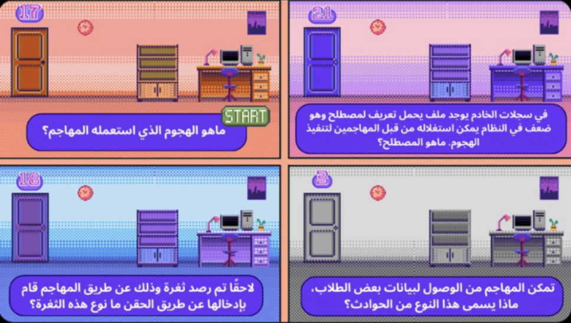
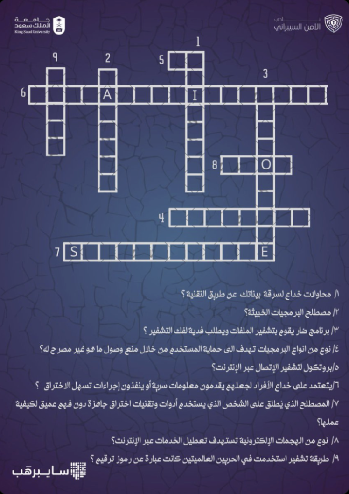
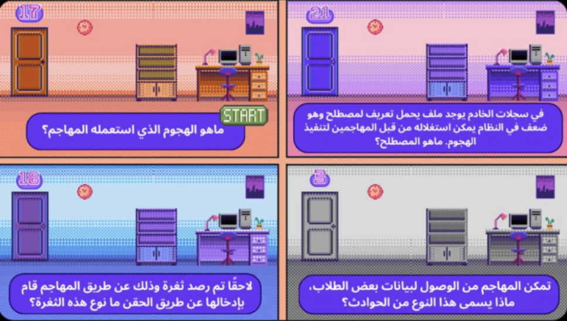
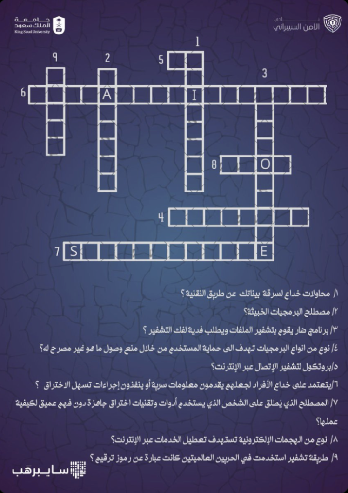

Leader Of Activities
School Visits
As part of the Cyber Security Club's outreach initiative, we conducted an educational visit to a local school to introduce students to key concepts in cybersecurity.
Cyber Attacks :We introduced students to common types of cyber attacks, Using real-world examples,how these attacks work, and how they can become targets the potential consequences. Most importantly, we discussed practical steps they can take to protect themselves
Cyber Security : We discussed the fundamental principles of cybersecurity, including what Considered to be personal data and how to protect it , and practicing safe internet habits
Social Engineering : We demonstrated how it can be easy to get the personal information and how it can be manipulated like phishing and impersonation can specifically target their age group. Through role-play and real life examples.
Earning Money Through Cybersecurity : addressed the common question: "How can you make money in cybersecurity?" To make it relatable, we focused on Capture The Flag (CTF) competitions hands on challenges that simulate real world cybersecurity problems and how to start
The visits aimed to raise early awareness about online threats and promote a culture of digital responsibility among younger students. The interactive approach and real-life scenarios helped simplify complex topics and spark curiosity in the field.
Awareness Booths
The booths raises awareness on trending cyber topics. The booths aimed to educate the general public in an accessible, hands-on format. Key topics presented included:
Social Bot:Showcased how social media bots can be used to manipulate public opinion, spread misinformation, or harvest personal data. Emphasized the ethical implications and need for stronger safeguards in digital communication platforms.
Deepfake Technology : Explained how AI-generated media (deepfakes) are created, the threats they pose in misinformation, fraud, and identity misuse, and how to identify and protect against them.
Hacker vs Hacker – An immersive segment that dove into the minds of both black-hat and white-hat hackers. Visitors learned how hackers operate, what motivates them, and how ethical hackers defend systems, creating a clearer picture of the cybersecurity battlefield.
The Victim and The Hacker – A storytelling experience that illustrated powerful, real-life scenarios of cyberattacks from both the victim's and hacker's perspectives. This segment aimed to create empathy, awareness, and a deeper understanding of the personal and emotional impact of cybercrime.
These booths served as a public-facing extension of the club's mission to promote cybersecurity literacy and spark dialogue around real-world digital risks..
كلمة خريج
initiative aimed at bridging the gap between academic life and the professional world, we hosted two impactful sessions featuring industry professionals and alumni:
من كلم علم لمحة – Hosted guest speaker Eng.Arwa Al-Omari, who shared her diverse experiences across multiple fields and provided students with valuable career advice. offered a great opportunity for learning and professional networking.
حوار منتصف الطريق– This session focused on the challenges of transitioning from student life to the workforce. Eng. Rakan Al-Muzaini shared his inspiring journey and insights into navigating real-world challenges in the cybersecurity industry.
These sessions were designed to provide students with real-world perspectives, motivate them through relatable success stories, and prepare them for the next step in their professional path.
 




Competitions
Hosted interactive cybersecurity competitions on X Platform as a creative approach to increase public engagement, promote security awareness, and strengthen technical skills in the field. These contests provided an accessible and engaging platform for audiences to participate in solving cybersecurity challenges.